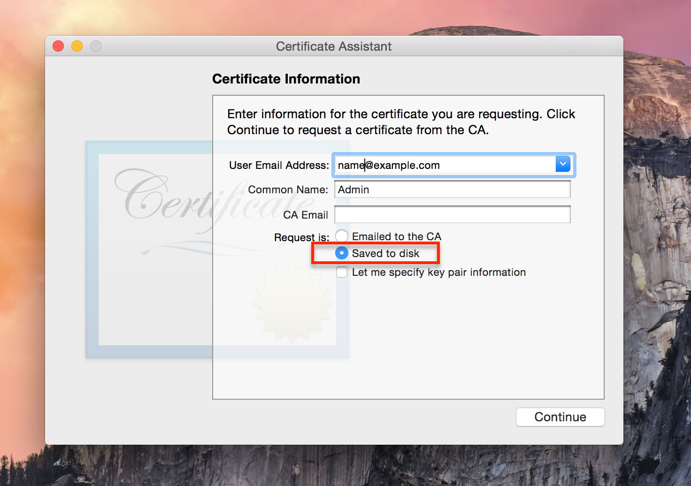
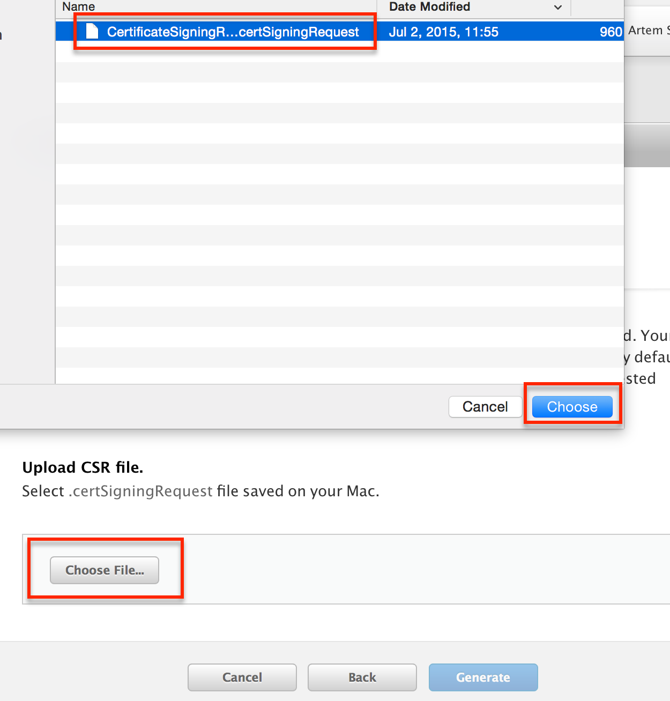
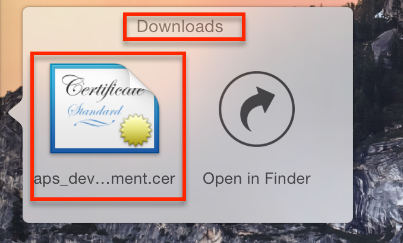

Generating Safari Push Certificate
The goals of this section are to provision your app with Apple and grant Jeapie access to manage your notifications.
1. Create Certificate Signing Request
1.1 Open Keychain Access on your Mac (it is located in Applications/Utilities) and choose the menu option Request a Certificate from a Certificate Authority….

1.2 Save Certificate
You should now see the following window:

Enter your email address here. Some people recommend using the same email address that you used to sign up for the iOS Developer Program, but it seems to accept any email address just fine.
Check Saved to disk and click Continue.
2. Create Website Push ID and apply the Certification Request to generate Certificate
2.1 Press "plus" button on the Website Push IDs.
2.2 Enter an ID, a Description and press the button Continue.
2.3 On the next pages press Register and the Done buttons.
2.4 On the Website Push IDs page select your site and press Edit.
2.5 Press Create Certificate.
2.6 Press "Choose File..", select the "certSigningRequest" file you saved in Step 1, open, and then press "Generate".

2.7 Press "Download" to save your certificate
3. Creating a p12 File
3.1 Open the website_aps_production.cer file you downloaded in the last step by double clicking on it in Finder.

3.2 After a few seconds the "Keychain Access" program should pop up. Select Login > Keys, then right click on your key in the list and select "Export"
3.3 Give the unique name to file and press save. You will have an option to protect the file with a password. Please don't protect this file with a password!